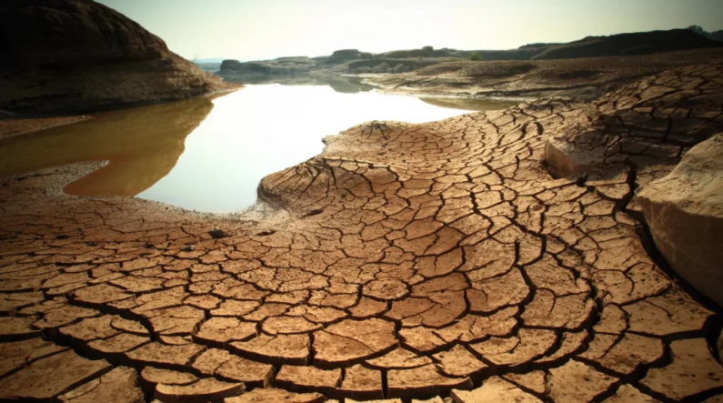

O que é a Escassez de Água?
A escassez de água ocorre quando a demanda por água doce excede a oferta disponível. Isso pode ser causado por fatores naturais, como secas prolongadas, ou por atividades humanas, como o consumo excessivo e a poluição das fontes hídricas.
Além disso, a escassez de água pode ser temporária ou crônica. A escassez temporária ocorre quando a quantidade de água disponível é insuficiente por um curto período, como durante uma seca. Já a escassez crônica é um problema estrutural e de longo prazo, relacionado à má gestão dos recursos hídricos e ao crescimento populacional descontrolado.
Causas da Escassez de Água
- Desmatamento e mudanças climáticas
- Uso excessivo de água na agricultura e na indústria
- Poluição de fontes de água potável
- Falta de infraestrutura para armazenamento e distribuição
O desmatamento contribui para a escassez de água, pois as árvores ajudam na manutenção do ciclo da água, como a evaporação e a precipitação. As mudanças climáticas, por sua vez, alteram os padrões de precipitação, o que leva a períodos de seca mais longos e frequentes.
O uso excessivo de água na agricultura, especialmente em regiões de clima árido, contribui para a sobre-exploração dos recursos hídricos. A irrigação inadequada e a falta de técnicas agrícolas sustentáveis são responsáveis por grande parte da perda de água doce.
Impactos da Escassez de Água
A escassez de água pode levar a:
- Crises de saúde pública devido à falta de água potável
- Redução na produção de alimentos
- Conflitos sociais e econômicos
- Perda de biodiversidade em ecossistemas aquáticos
Em áreas com escassez de água, a saúde pública é severamente afetada, uma vez que as pessoas têm dificuldade em acessar água limpa para consumo, o que pode resultar em surtos de doenças transmitidas pela água, como a cólera.
A escassez de água também afeta a agricultura, que depende de grandes quantidades de água para irrigação. A escassez pode reduzir a produção de alimentos, aumentando os preços e a insegurança alimentar, especialmente em países em desenvolvimento.
O acesso limitado à água pode causar tensões sociais e econômicas, gerando conflitos em comunidades e até entre países que compartilham fontes hídricas transfronteiriças.
Soluções para a Escassez de Água
Algumas medidas para combater a escassez de água incluem:
- Investir em tecnologias de dessalinização e reaproveitamento de água
- Promover o uso consciente e a redução do desperdício
- Proteger e restaurar ecossistemas aquáticos
- Implementar políticas públicas para gestão sustentável da água
A dessalinização é uma técnica que pode ajudar a garantir o fornecimento de água potável em regiões costeiras, onde a água salgada é abundante, mas a água doce é escassa.
A restauração de ecossistemas aquáticos, como a recuperação de bacias hidrográficas e a proteção de áreas de recarga de aquíferos, pode melhorar a qualidade e quantidade de água disponível a longo prazo.
A educação ambiental também é essencial para a implementação do uso sustentável da água. Incentivar a população a adotar práticas de conservação, como o uso racional da água em residências e a coleta da água da chuva, pode ajudar a reduzir a pressão sobre os recursos hídricos.
Teste seus conhecimentos sobre a escassez de água!
1. O que é escassez de água?
2. Quais são as principais causas da escassez de água?
3. Qual é um dos impactos da escassez de água?